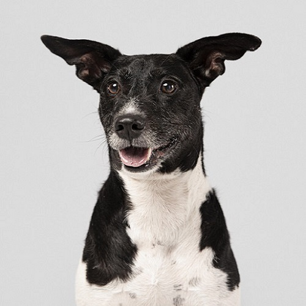
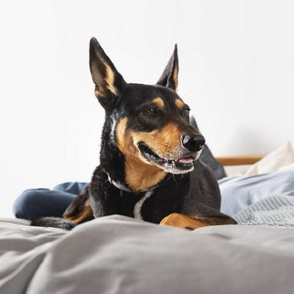

Patitas Felices
Nuestros rescatados
Todos nuestros rescatados están esperando por un hogar. Animate a sumarlos a tu familia, ellos merecen una vida digna y llena de amor. ¡Vení a conocerlos! No te vas a arrepentir.
Tommy: Macho, metizo. 2 meses de edad.
Charly: Macho, mestizo. 3 años de edad.